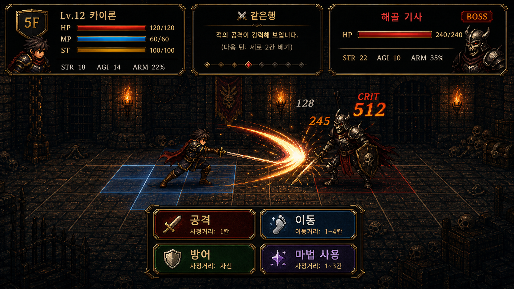

Swordmasters Ascent 기획서
플레이 미리보기
플레이 미리보기

1. 게임 개요
| 항목 | 내용 |
|---|---|
| 장르 | 턴제 로그라이크 전투 게임 |
| 플랫폼 | Windows (Electron 포터블 .exe), 브라우저 (Next.js) |
| 핵심 루프 | 이름 짓기 → 능력치 분배 → 전투 → 보상 → 다음 층 |
| 승리 조건 | 없음 (무한 층, 최고 층수 기록) |
| 패배 조건 | HP가 0 이하가 되면 즉시 게임오버 |
| 테마 | 검사들만 사는 탑 — 플레이어도 검사, 적도 검사 |
| 시작 HP / MP | HP 90 / MP 45 |
| 시작 스테미너 | 22 |
2. 게임 플로우
| Phase | 설명 |
|---|---|
start | 타이틀 화면. 새 게임 / 이어하기(3슬롯) / 기록 |
tutorial | 선택적 튜토리얼 (세계관 → 목표 → 전투흐름 → 시스템 8단계) |
naming | 이름 입력 (최대 10자) + 8개 프리셋 |
stat_roll | 능력치 주사위 굴림 및 분배, 재굴림 가능 |
battle | 메인 전투 화면 (select_main → select_sub → rolling → result) |
reward | 층 클리어 후 보상 선택 (장비 / 아이템 / 칭호 / 건너뛰기) |
gameover | 사망 화면. 최고 기록 갱신 시 표시 |
3. 전투 시스템
3.1 격자 구조
[플레이어] ← 위치 1~5 → [적]
거리 = 적 위치 - 플레이어 위치
행(Row): 1(위) / 2(중간, 기본) / 3(아래)
| 거리 | 명칭 | 색상 |
|---|---|---|
| 0 | 동일 칸 (밀착 교전) | ■ 노랑 |
| 1 | 밀착 | ■ 빨강 |
| 2 | 근접 | ■ 주황 |
| 3 | 중거리 | ■ 노랑 |
| 4 | 원거리 | ■ 파랑 |
| 5 | 최원거리 | ■ 보라 |
플레이어 시작 위치: 1 | 적 시작 위치: 4 (거리 3). 행은 이동 서브액션으로만 변경. 공격은 같은 행에만 명중. 마법·아이템(투척)은 행 무관.
거리 0(동일 칸): 양측 강제 교전 발생. 피해를 더 입힌 쪽이 상대를 1칸 밀어냄.
3.2 메인 액션 (5가지) v1.5.43 수치 갱신
| 액션 | 스테미너 | 특징 |
|---|---|---|
| 공격 | -13 | 근거리에서 강함, 원거리 약화. 같은 행에만 명중 |
| 이동 | +10 | 스테미너 주요 회복 수단. 속도 우위 시 피격 완전 회피 |
| 방어 | +4 | 힘싸움 결과에 따라 완벽 차단 / 절반 막음 / 역이용 세 단계 |
| 마법 사용 | -8 | 원거리에서 강함, 행 무관. 2d6 성공 주사위 있음. MP 소모 |
| 아이템 사용 | -6 | 치유 또는 원거리 투척 (행 무관) |
스테미너 변화 시각화
이동과 방어 모두 스테미너를 회복한다. 적극적 공격(공격·마법·아이템)은 소모한다. 스테미너가 부족하면 능력치 전체에 페널티가 적용되므로 자원 관리가 핵심.
3.3 서브액션 (22개) v1.5.43 갱신
공격 서브 (4개) 뒤로 베기 추가
| 서브액션 | 설명 | 자세 힌트 (적에게 표시) | 완벽 카운터 | 비고 |
|---|---|---|---|---|
| 세로 베기 | 강력한 내리치기 | "검을 머리 위로 높이 들어올렸다" | 올려막기 | — |
| 가로 베기 | 옆으로 베기+경직 | "검을 옆으로 크게 벌리며 자세를 낮췄다" | 세로 막기 | — |
| 찌르기 | 빠른 찌르기 | "검 끝을 앞으로 겨냥하며 중심을 낮췄다" | 가로 막기 | — |
| NEW 뒤로 베기 | 후퇴하며 베기 | "물러서면서 검을 옆으로 긋는다" | 전진 압박 | 거리 +1, 밀착 전용 |
방어 서브 (3개) 명칭 변경
| 서브액션 | 설명 | 자세 힌트 | 완벽 카운터 |
|---|---|---|---|
| 세로 막기 | 수직 방어 (구: 정면 막기) | "검을 수직으로 세워 정면을 가렸다" | 세로 베기 |
| 올려막기 | 위쪽으로 막기 | "검날을 비스듬히 들어올려 위를 막았다" | 가로 베기 |
| 가로 막기 | 가로로 막아내기 (구: 흘려막기) | "검을 가로로 뻗어 힘을 흘려보낸다" | 찌르기 |
이동 서브 (4개)
| 서브액션 | 설명 | 자세 힌트 | 카운터 | 조건 |
|---|---|---|---|---|
| 전진 압박 | 거리 -1 | "발을 크게 내딛으며 앞으로 밀어붙였다" | 위로 이동 | 위치 > 1 |
| 후퇴 | 거리 +1 | "뒷발을 당기며 거리를 벌렸다" | 전진 압박 | 위치 < 5 |
| 위로 이동 | 행 -1 (위로) | "옆으로 크게 발을 옮기며 위치를 바꿨다" | 아래로 이동 | 행 > 1 |
| 아래로 이동 | 행 +1 (아래로) | "낮게 자세를 잡으며 아래쪽으로 이동했다" | 위로 이동 | 행 < 3 |
마법 서브 (6개)
| 서브액션 | 설명 | 자세 힌트 | 카운터 |
|---|---|---|---|
| 화염 쇄도 | 화염 마법 공격 | "손바닥에 붉은 불꽃이 피어오르기 시작했다" | 위로 이동 |
| 암흑 속박 | 속박 마법 | "손끝에서 검은 연기가 소용돌이치기 시작했다" | 가로 막기 |
| 회복술 | 체력 회복 | "몸 주위에 희미한 빛이 감돌기 시작했다" | 세로 베기 |
| 빙결 창 | 얼음 창 투척 | "팔을 들어올리며 차가운 기운이 모였다" | 후퇴 |
| 번개 일격 | 번개 마법 공격 | "팔끝에서 파란 전기가 지직거리기 시작했다" | 올려막기 |
| 바람 쇄도 | 바람 마법 공격 | "양손이 바람을 끌어모으며 소용돌이쳤다" | 전진 압박 |
아이템 서브 (5개)
| 서브액션 | 설명 | 자세 힌트 | 카운터 | 사거리 |
|---|---|---|---|---|
| 치유 물약 | HP +25 회복 | "허리춤에서 무언가를 꺼내 들었다" | 전진 압박 | — |
| 단검 던지기 | 원거리 단검 (strength × 0.9) | "작은 단검을 손에 쥐고 팔을 뒤로 당겼다" | 세로 막기 | 4 |
| 폭발 물약 | 방어 무시 고정 피해 32 | "주머니에서 붉게 빛나는 구슬을 꺼내 들었다" | 후퇴 | 5 |
| 강화 단검 | 강력한 단검 투척 (strength × 1.2) | "무거운 단검을 손에 쥐고 조준했다" | 가로 막기 | 4 |
| 대형 치유 물약 | HP +50 대량 회복 | "큼지막한 물약을 꺼내 뚜껑을 열었다" | 전진 압박 | — |
힌트 표시: 플레이어는 적 행동 이름을 볼 수 없고 자세 힌트만 표시됨. 불가능한 이동(위치·행 경계)은 예측 목록에서 제외. 투척 아이템 vs 전진하는 적: 항상 빗나감. 적이 속도 우위 시 투척 회피 가능.
3.4 액션 결과 테이블
플레이어 행동(행) vs 적 행동(열) → [플레이어 결과 / 적 결과]
| 적: 공격 | 적: 이동 | 적: 방어 | 적: 마법 | 적: 아이템 | |
|---|---|---|---|---|---|
| 내: 공격 | draw/draw | win/lose | block/win | win/lose | win/lose |
| 내: 이동 | lose/win | draw/draw | win/lose | lose/win | draw/draw |
| 내: 방어 | win/lose | lose/win | draw/draw | lose/win | draw/draw |
| 내: 마법 | lose/win | win/lose | win/lose | draw/draw | lose/win |
| 내: 아이템 | lose/win | draw/draw | draw/draw | lose/win | draw/draw |
3.5 주사위 체계 (3단계) v1.5.43 전면 개편
매 턴 세 종류의 주사위 콘테스트가 순서대로 진행된다. 각 결과가 최종 피해 배율을 결정한다.
1단계: 속도 주사위 (Speed Contest)
민첩 비율로 주사위 수 결정 → 양측 굴림 → 합계 비교
| 결과 | 플레이어 배율 | 적 배율 | 특수 효과 |
|---|---|---|---|
| 플레이어 승 | ×1.2 | ×0.85 | 이동 선택 시 적 피해 0 (완전 회피) |
| 동점 | ×1.0 | ×1.0 | — |
| 적 승 | ×0.85 | ×1.2 | 투척 아이템 회피 가능 |
2단계: 힘싸움 주사위 (Strength Contest)
공격·방어가 모두 개입된 교전(draw)에서 발생. 완벽 카운터 성공 시 플레이어 주사위 +1, 미스 시 -1.
| 결과 | 플레이어 배율 | 적 배율 |
|---|---|---|
| 플레이어 압승 (차이 ≥ 4) | ×1.5 | ×0.65 |
| 플레이어 승 (차이 < 4) | ×1.25 | ×0.80 |
| 동점 | ×1.0 | ×1.0 |
| 적 승 (차이 < 4) | ×0.80 | ×1.25 |
| 적 압승 (차이 ≥ 4) | ×0.65 | ×1.5 |
3단계: 마법 성공 주사위 (Magic Roll)
마법 사용 시 2d6을 굴려 성공 여부를 판정한다.
주사위 수 결정 (공통)
| 내 stat / 상대 stat 비율 | 주사위 수 |
|---|---|
| ≥ 2.0 | 4개 |
| ≥ 1.4 | 3개 |
| ≥ 0.9 | 2개 |
| 그 외 | 1개 |
크리티컬 조건
속도 주사위 AND 힘싸움 주사위 모두 플레이어 승 + 두 콘테스트 합산 차이 ≥ 5일 때 크리티컬 발생.
3.6 방어 시스템 세부 v1.5.43 3단계 분기
방어 선택 시 힘싸움 주사위 결과로 세 가지 결과 중 하나가 결정된다.
| 힘싸움 결과 | 받는 피해 | 반격 피해 | 메시지 |
|---|---|---|---|
| 압승 (차이 ≥ 4) | 0 | strength × 0.6 × 배율 | 완벽 차단 + 반격 |
| 승 (차이 < 4) | 적 strength × 0.20 × 배율 | 0 | 대부분 막음 |
| 동점 | 적 strength × 0.55 × 배율 | 0 | 절반 막음 |
| 패 | 적 strength × 1.10 × 배율 | 0 | 방어 역이용당함 |
방어는 스테미너를 회복하면서도 강력한 반격 가능성을 제공하지만, 힘싸움에서 지면 오히려 더 많은 피해를 받는 위험이 있다. 서브액션 카운터로 힘싸움 주사위를 늘려야 유리해진다.
3.7 거리 보너스 (데미지 배수)
| 액션 | 거리 1~2 | 거리 3 | 거리 4~5 |
|---|---|---|---|
| 공격 | 1.25× | 1.00× | 0.70× |
| 마법 | 0.70× | 1.05× | 1.25× |
| 방어 (거리 1만) | 1.15× | 1.00× | 1.00× |
| 나머지 | 1.00× | 1.00× | 1.00× |
3.8 스테미너 시스템 v1.5.43 갱신
| 조건 | 페널티 공식 |
|---|---|
| 스테미너 < 60% | staminaFactor = 0.65 + ratio × 0.6 |
| HP < 50% | hpFactor = 0.75 + ratio × 0.5 |
최종 능력치 = base × min(hpFactor, staminaFactor) × conditionMultiplier
스테미너 회복 수단: 이동 (+10), 방어 (+4). 소모: 공격 (-13), 마법 (-8), 아이템 (-6).
3.9 부상 시스템 NEW
전투 중 큰 피해를 받으면 부위별 부상이 발생해 능력치를 지속적으로 저하시킨다.
발생 조건
| 단일 피격 피해 | 부상 발생 확률 |
|---|---|
| 최대 HP의 25% 이상 | 30% |
| 최대 HP의 50% 이상 | 60% |
부상 유형 및 효과
| 부위 | 코드 | 감소 능력치 | 경상 (minor) | 중상 (major) |
|---|---|---|---|---|
| 💪 팔 부상 | arm | 힘 (strength) | ×0.80 | ×0.65 |
| 🦵 다리 부상 | leg | 민첩 (agility) | ×0.80 | ×0.65 |
| 🫀 몸 부상 | body | 턴당 스테미너 감소 | -3/턴 | -6/턴 |
부상 등급 규칙
첫 부상은 경상(minor). 같은 부위에 재부상 시 중상(major)으로 업그레이드. 모든 부위(팔·다리·몸)가 중상이면 추가 부상 없음.
부상 UI (플레이어 카드 배지)
치료
쉼터 이벤트에 '부상 치료' 선택지가 추가된다. 선택 시 가장 심한 부상 1개(중상 우선)를 제거한다.
4. 캐릭터 시스템
4.1 플레이어 생성 흐름
최대 10자 / 프리셋 8개
재굴림 가능
HP 90 / MP 45 / 스테미너 22
프리셋: 검사 / 기사 / 방랑자 / 검성 / 암살자 / 수호자 / 전사 / 검귀
시작 마법: 랜덤 1개 | 시작 아이템: 치유 물약 + 단검 던지기 | 시작 무기 사거리: 1
최고 기록 반영: 높은 기록일수록 시작 능력치 소폭 상승 (highScore × 0.1 보너스)
4.2 컨디션 시스템
층 이동 시마다 새로 굴림. 전투 중에는 변하지 않음.
| 컨디션 | 확률 | 배수 | 색상 |
|---|---|---|---|
| 최상 (excellent) | 10% | 1.10× | ■ 노랑 |
| 좋음 (good) | 20% | 1.05× | ■ 초록 |
| 보통 (normal) | 30% | 1.00× | ■ 회색 |
| 나쁨 (bad) | 22% | 0.85× | ■ 주황 |
| 최악 (terrible) | 18% | 0.70× | ■ 빨강 |
4.3 능력치 구조
| 능력치 | 역할 |
|---|---|
strength | 공격 데미지, 힘싸움 주사위 수 결정 |
agility | 속도 주사위 수 결정, 이동 회피 우위 판정 |
armor | 받는 데미지 감소 (armor / 100 비율, 최대 70) |
critChance | 크리티컬 확률 보정에 영향 |
elements | fire / water / wind / earth / dark — 마법 데미지 계산 (strength × 0.7 + elements × 0.3) |
4.4 칭호 시스템
업적 칭호 (6개, 자동 획득)
| 칭호 | 획득 조건 | 보너스 |
|---|---|---|
| 신참자 | 처음 전투 | 없음 |
| 무기 파괴자 | 완벽 방어 10회 | strength+5, critChance+5 |
| 탑 등반가 | 5층 돌파 | agility+5 |
| 보스 사냥꾼 | 보스 처치 | strength+10, critChance+5 |
| 비전 연구자 | 10층 돌파 | critChance+5, agility+5 (마법 쿨다운 0) |
| 생존자 | 체력 25% 이하로 승리 | armor+10 |
전투 칭호 (동적 생성)
적 처치 후 보상 화면에서 적 능력치 기반으로 3개 생성, 플레이어가 1개 선택. 즉시 능력치에 반영된다.
| 생성 조건 | 칭호 예시 | 보너스 |
|---|---|---|
| 적 strength 기반 | {적 이름} 격파자 | strength += max(4, 적strength × 0.15) |
| 적 agility 기반 | 신속의 사냥꾼 / 날렵한 검사 | agility += max(4, 적agility × 0.15) |
| 적 armor 기반 | 철벽 파괴자 / 방어 격파자 | armor += max(3, 적armor × 0.25) |
| 적 최강 속성 기반 | {속성}의 계승자 | critChance += max(4, 적critChance × 0.3) |
| 보스 처치 시 추가 | 보스 처치자 | strength+8, agility+5, critChance+5 |
5. 적 시스템
5.1 일반 적 (8종)
| 이름 | 등장 층 | HP | str | agi | armor | 사거리 | 행동 패턴 |
|---|---|---|---|---|---|---|---|
| 검사 연습생 | 1~3 | 60 | 12 | 18 | 5 | 1 | 공격50 이동30 방어10 마법10 |
| 검사 전사 | 2~5 | 120 | 28 | 12 | 15 | 2 | 공격60 방어25 이동10 마법5 |
| 검사 마법사 | 4~7 | 80 | 10 | 15 | 5 | 4 | 마법60 이동20 공격10 방어10 |
| 검사 기사 | 3~7 | 150 | 35 | 10 | 28 | 2 | 방어45 공격30 마법10 아이템5 |
| 검사 방랑자 | 4~8 | 100 | 20 | 38 | 8 | 2 | 이동45 공격25 마법20 방어10 |
| 검사 결투사 | 6~99 | 130 | 32 | 28 | 14 | 2 | 공격30 방어30 마법20 이동20 |
| 검사 집행관 | 8~15 | 180 | 45 | 30 | 22 | 2 | 공격50 방어25 이동15 마법10 |
| 검사 마도사 | 11~99 | 110 | 15 | 22 | 10 | 4 | 마법70 이동15 방어10 공격5 |
5.2 보스 (2종, 5층마다)
| 이름 | 등장 층 | HP | str | agi | armor | 사거리 |
|---|---|---|---|---|---|---|
| BOSS 검사 대장 | 5, 9, ... | 250 | 55 | 45 | 30 | 3 |
| BOSS 검사 원로 | 10, 15, ... | 320 | 72 | 58 | 38 | 3 |
층 스케일링: 모든 적 스탯 × (1 + (층-1) × 0.15) | 보스 조건: floor % 5 === 0 | armor 상한: 70
5.3 특수 적
| 종류 | 설명 |
|---|---|
| 라이벌 1층 검사 신입 | 플레이어 능력치 기반으로 생성 (±20% 오차). HP도 플레이어 maxHp의 85~115%. |
| 유령 {이름}의 유령 | 플레이어가 2층 이상에서 사망 시 1층 아래에 배치. 해당 층 진입 시 100% 소환. 층당 최대 5개 저장. |
| 레거시 이전 플레이 적 | 2층 이상에서 10% 확률로 과거 런의 플레이어 캐릭터가 적으로 등장. |
5.4 적 능력 풀 (6개)
| 능력 | 효과 |
|---|---|
| 흑요석 갑옷 | armor +6 |
| 신속한 일격 | agility +6 |
| 비전력 축적 | MP 재생 +3/턴 |
| 원한의 화염 | fire +10 |
| 암흑 저주 | critChance +8 |
| 대지의 울림 | earth +10 |
능력 개수: 층수만큼 최대 6개까지. 1층 = 1개, 6층 이상 = 6개 전부.
5.5 AI 의사결정
| 상황 | AI 반응 (가중치 보정) |
|---|---|
| 적 HP < 25% | 방어 +50, 이동 +30, 공격 -30 |
| 적 HP < 50% | 방어 +25, 이동 +10 |
| 플레이어 HP < 25% | 공격 +50, 마법 +20, 방어 -20 |
| 플레이어 HP < 50% | 공격 +25 |
| 사거리 밖 | 이동(전진) +50, 공격 -25 |
| 근거리 (거리 ≤ 2) | 공격 +25, 마법 -10 |
| 중거리 | 마법 +15 |
| 플레이어 마지막에 공격 | 방어 +30, 이동 +15 |
| 플레이어 마지막에 방어 | 이동 +25, 마법 +20, 공격 -15 |
| 플레이어 마지막에 이동 | 공격 +25 |
| 플레이어 마지막에 마법 | 이동 +30 |
| 플레이어 마법 사용 불가 | 공격 +10 |
| 플레이어 아이템 없음 | 공격 +5 |
이동 서브액션: 사거리 밖이면 전진 압박 우선. 행 불일치 시 플레이어 행 방향으로 이동. 방어 서브: 플레이어 마지막 서브의 카운터를 학습해서 사용.
6. 진행 시스템
6.1 층 진행
적을 쓰러뜨리면 보상 화면 → 다음 층. 층 이동 시 컨디션 재굴림. 층수 무한 (최고 기록 localStorage 저장).
6.2 보상 시스템
층 클리어 후 4가지 선택지 중 하나를 고름:
| 선택지 | 내용 |
|---|---|
| 장비 | 층수 기반 티어 장비 1개 (무기 또는 방어구) |
| 아이템 | 소모 아이템 1개 (폭발 물약 / 강화 단검 / 대형 치유 물약) |
| 칭호 | 적 능력치 기반 칭호 3종 중 선택 → 즉시 능력치 반영 |
| 건너뛰기 | 아무것도 받지 않음 |
6.3 장비 풀 (티어별)
| 장비 | 종류 | 효과 |
|---|---|---|
| 철제 검 | 무기 (range 2) | strength +10 |
| 신속의 장화 | 방어구 | agility +12 |
| 화염 도검 | 무기 (range 2) | strength +8, fire +15 |
| 투척 단검 | 무기 (range 4) | strength +6, agility +4 |
| 철제 방패 | 방어구 | armor +15 |
| 그림자 망토 | 방어구 | agility +8, dark +10 |
| 장비 | 종류 | 효과 |
|---|---|---|
| 강철 대검 | 무기 (range 2) | strength +18 |
| 경량 갑옷 | 방어구 | agility +14, armor +6 |
| 빙결 도검 | 무기 (range 2) | strength +10, water +22 |
| 중갑 방패 | 방어구 | armor +22 |
| 폭풍 망토 | 방어구 | agility +12, wind +18 |
| 뇌전 도검 | 무기 (range 2) | strength +12, wind +12, dark +8 |
| 장비 | 종류 | 효과 |
|---|---|---|
| 전설의 검 | 무기 (range 3) | strength +28 |
| 마스터 갑주 | 방어구 | armor +28, agility +10 |
| 비전 지팡이 | 무기 (range 5) | strength +6, 전속성 +18 |
| 홍염 대검 | 무기 (range 2) | strength +22, fire +20 |
| 허공의 갑주 | 방어구 | armor +20, agility +14, dark +20 |
7. 마법 & 아이템
7.1 마법 시스템 v1.5.43 쿨다운 기준 변경
| 항목 | 층 < 5 | 층 ≥ 5 |
|---|---|---|
| MP 비용 | 10 | 10 (층 ≥ 10이면 8) |
| MP 재생 | +8/턴 | +8/턴 (층 ≥ 10이면 +10) |
| 쿨다운 | 시전 후 1턴 대기 | 즉시 (쿨다운 없음) |
'비전 연구자' 칭호 장착 시 항상 쿨다운 0 | 마법은 성공 시 속도·힘싸움 배율 무시하고 무조건 피격
7.2 아이템 전체 (5종)
| 아이템 | 획득 | 효과 |
|---|---|---|
| 치유 물약 | 시작 지급 | HP +25 |
| 단검 던지기 | 시작 지급 | 사거리 4, strength × 0.9 피해 |
| 폭발 물약 | 보상 | 방어 무시 고정 피해 32, 사거리 5 |
| 강화 단검 | 보상 | 사거리 4, strength × 1.2 피해 |
| 대형 치유 물약 | 보상 | HP +50 |
8. 저장 시스템
| 슬롯 | localStorage 키 | 저장 내용 |
|---|---|---|
| 슬롯 1 | swordmasters-ascent-save-1 | phase, floor, highScore, timestamp, playerPos, enemyPos, playerRow, enemyRow, magicCooldown, combatStep, player, enemy, intent, stats, logs, legacy |
| 슬롯 2 | swordmasters-ascent-save-2 | |
| 슬롯 3 | swordmasters-ascent-save-3 | |
| 유령 데이터 | swordmasters-floor-ghosts | 층별 유령 캐릭터 (층당 최대 5개) |
| 최고 기록 | swordmasters-ascent-highscore | 최고 도달 층수 (숫자) |
| 튜토리얼 완료 | swordmasters-ascent-tutorial-done | 완료 여부 (boolean) |
저장 방식: 수동 저장만 지원 (자동 저장 없음). 슬롯 목록에는 층수, 저장 시각, 플레이어 이름이 표시된다.
9. 수치 레퍼런스
스테미너 변화량 v1.5.43
| 행동 | 변화 |
|---|---|
| 이동 | +10 |
| 방어 | +4 |
| 아이템 사용 | -6 |
| 마법 사용 | -8 |
| 공격 | -13 |
층 스케일링
적 스탯 배율 = 1 + (floor - 1) × 0.15 예: 5층 = 1.60× 10층 = 2.35× 20층 = 3.85×
컨디션 배수 요약
| 컨디션 | 배수 | 확률 |
|---|---|---|
| 최상 | 1.10× | 10% |
| 좋음 | 1.05× | 20% |
| 보통 | 1.00× | 30% |
| 나쁨 | 0.85× | 22% |
| 최악 | 0.70× | 18% |
마법 성공 확률 (2d6)
| 합계 | 결과 | 누적 확률 |
|---|---|---|
| 2~5 | 실패 (×0) | 27.8% |
| 6~9 | 성공 (×1.0) | 55.6% |
| 10~12 | 강화 성공 (×1.3) | 16.7% |
10. 성공 요인 분석
이 게임이 플레이어에게 지속적인 재미와 도전을 제공할 수 있는 핵심 요인들을 정리한다.
플레이어는 적의 서브액션을 직접 볼 수 없고 자세 힌트만 읽을 수 있다. 이 구조는 단순한 RNG 전투를 추리 게임으로 전환한다.
- 힌트 해석 → 카운터 선택 → 완벽 방어 성공 시의 심리적 만족감이 핵심 보상
- AI도 플레이어의 마지막 행동을 분석해 카운터하므로, 패턴을 읽고 속이는 플레이가 가능
- 숙련될수록 힌트 해석 정확도가 오르는 스킬 성장 곡선 존재
매 턴 속도 → 힘 → 마법 세 단계 주사위가 순차적으로 결과를 결정한다. 각 단계가 역전 가능성을 품고 있어 결과를 끝까지 지켜보게 만든다.
- 속도 주사위 패배 → 힘싸움에서 만회 → 크리티컬 달성이라는 드라마틱한 역전 루트
- 마법 2d6 성공 주사위가 하이리스크-하이리워드 감각을 강화
- 완전한 RNG가 아닌 능력치·서브액션으로 주사위 수를 조정할 수 있어 전략성과 운의 균형 달성
세 자원이 서로 다른 역할을 하며 상호 의존한다. 하나만 소모하면 되는 구조가 아니라, 세 자원의 균형을 동시에 관리해야 한다.
- 스테미너: 낮으면 전 능력치 페널티 → 이동과 방어로 회복하는 리듬 강제
- HP: 낮으면 추가 능력치 페널티 → 치유 아이템 사용 타이밍이 핵심 결정
- MP: 마법의 유일한 연료 → 마법 사용 빈도와 스테미너 사이의 트레이드오프
- 방어가 스테미너를 회복하므로 "공격 vs 방어" 선택이 단순한 행동 선택 이상의 자원 관리 결정이 됨
X축(거리 1~5)과 Y축(행 1~3)의 조합이 전술 공간을 만든다. 공격은 같은 행에만 명중하므로 행 이동이 완전한 회피 수단이 된다.
- 근접 특화 빌드(공격) vs 원거리 특화 빌드(마법)의 자연스러운 분기
- 행 불일치 시 공격 빗나감 → AI도 행을 맞추려 이동하므로 행 싸움이 생성됨
- 뒤로 베기(밀착 전용, 거리 +1)가 밀착 탈출 옵션으로 기능해 포지셔닝 깊이 추가
매 런마다 다른 장비 티어, 동적 생성 칭호, 랜덤 컨디션, 유령·레거시 적이 결합되어 반복 플레이 가치를 만든다.
- 동적 칭호: 적 능력치에서 파생되므로 동일한 칭호 두 개는 사실상 없음 — 빌드 다양성 확보
- T1 → T2 → T3 장비 티어 전환이 중반 성장 곡선의 기준점이 됨
- 유령 시스템: 과거 자신의 죽음이 다음 런의 위협이 되는 내러티브 연결성
- 최고 기록 보너스: 더 오래 살아남을수록 다음 런이 조금 더 강해지는 누적 성장
"검사들만 사는 탑"이라는 단순하고 강렬한 세계관 설정이 모든 시스템 디자인의 일관성을 보장한다.
- 플레이어도, 적도, 보스도 모두 "검사"이므로 같은 액션 체계(공격/방어/이동/마법/아이템)를 공유
- 자세 힌트가 자연스럽게 서사로 읽힘 ("검을 머리 위로 들어올렸다"는 단순 UI가 아닌 장면)
- 라이벌(1층 검사 신입), 유령, 레거시 등 반복 플레이 요소가 "탑에서 죽은 검사들"로 서사화됨
선택지 수가 적고 UI가 명확해 처음 플레이어도 즉시 시작할 수 있지만, 깊이 파고들수록 최적 플레이의 복잡도가 증가한다.
- 메인 액션 5가지 — 직관적인 가위바위보 구조로 첫 판에도 합리적 선택 가능
- 힌트 해석, AI 패턴 역이용, 자원 관리, 포지셔닝 최적화까지 숙련 요소가 계층화
- 튜토리얼 건너뛰기 가능 — 빠르게 시작하고 싶은 플레이어를 위한 진입로 제공
- 무한 층 구조로 "한 판 더"의 욕구를 자연스럽게 유발
동일 코드베이스로 포터블 exe와 웹 브라우저 버전을 동시 제공해 배포와 접근성 문제를 해결한다.
- 설치 불필요한 포터블 exe로 윈도우 사용자 즉시 실행
- 브라우저 버전으로 링크 하나로 공유·체험 가능 → 바이럴 확산에 유리
- localStorage 기반 저장으로 서버 없이 3슬롯 세이브 구현 — 운영 비용 없음
11. 비즈니스 모델
게임은 두 가지 배포 채널을 통해 서로 다른 수익화 전략을 적용한다. 웹 버전은 광고 기반 무료 플레이로 최대한 많은 유저에게 노출하고, Steam / itch.io 버전은 일회성 유료 구매로 수익을 확보한다.
| 채널 | 모델 | 광고 | DLC |
|---|---|---|---|
| 웹 게임 | 무료 플레이 (Ad-supported) | 있음 | — |
| Steam / itch.io | 정가 판매 (일회성 구매) | 없음 | 가능 |
11.1 웹 버전 — 광고 기반 무료 플레이
브라우저 버전은 완전 무료로 플레이 가능하며, Google AdSense 또는 Unity Ads 형태의 광고로 수익을 창출한다.
광고 유형
| 유형 | 노출 시점 | 빈도 / 조건 | 비고 |
|---|---|---|---|
| 배너 광고 | 게임 화면 주변 (항시) | 상시 노출 | Google AdSense / Unity Ads |
| 보상형 광고 (Rewarded Ad) | 플레이어가 자발적으로 시청 요청 시 | 선택적 | 쉼터 치료 1회 추가, 골드 획득 등 인게임 보상 제공 |
| 인터스티셜 광고 | 층 이동 시 또는 게임오버 후 | 3~5판마다 1회 | 과도하지 않도록 빈도 제한 필수 |
보상형 광고는 강요하지 않고 플레이어가 원할 때만 시청한다. 인터스티셜 광고는 3~5판마다 1회로 제한해 게임 흐름을 과도하게 방해하지 않는다.
11.2 Steam / itch.io 버전 — 유료 구매
데스크톱 패키지(Electron .exe)는 정가로 판매하며, 광고가 전혀 없는 클린한 경험을 제공한다.
| 항목 | 내용 |
|---|---|
| 판매 방식 | 정가 판매 (일회성 구매), 지속 구독 없음 |
| 광고 | 없음 — 완전 광고 제거판 |
| DLC | 추가 콘텐츠 DLC 가능 — 새 캐릭터 빌드, 추가 층, 신규 보스 등 |
| Steam | 정가 판매 |
| itch.io | Pay-What-You-Want 또는 최소가 설정 |
itch.io의 Pay-What-You-Want 모델은 진입 장벽을 낮추면서도 게임을 지지하는 플레이어에게 더 많이 낼 선택권을 준다. Steam 버전은 정가로 안정적인 수익을 확보한다.
11.3 크로스 프로모션
웹 버전과 패키지 버전을 연결하여 유저 전환율을 높인다.
| 전략 | 내용 |
|---|---|
| 광고 제거판 구매 유도 | 웹 버전 내 광고 대신 "광고 없는 버전 구매" 버튼 노출 — Steam / itch.io 구매 페이지로 연결 |
| 웹 버전의 데모 역할 | 스팀 출시 전 웹 버전으로 유저 풀 확보. 웹 버전이 사실상 무료 데모 역할을 겸함 |
광고 수익
전환 유도
일회성 수익
장기 수익
웹 버전은 광고 수익 창출과 동시에 Steam / itch.io 버전의 마케팅 채널로 기능한다. 유저 이탈 없이 자연스럽게 유료 전환을 유도하는 것이 핵심.
이 기획서는 실제 구현 코드(src/lib/gameData.ts, src/components/SwordmastersAscent.tsx)를 기준으로 동기화됩니다. 버전: 1.5.43